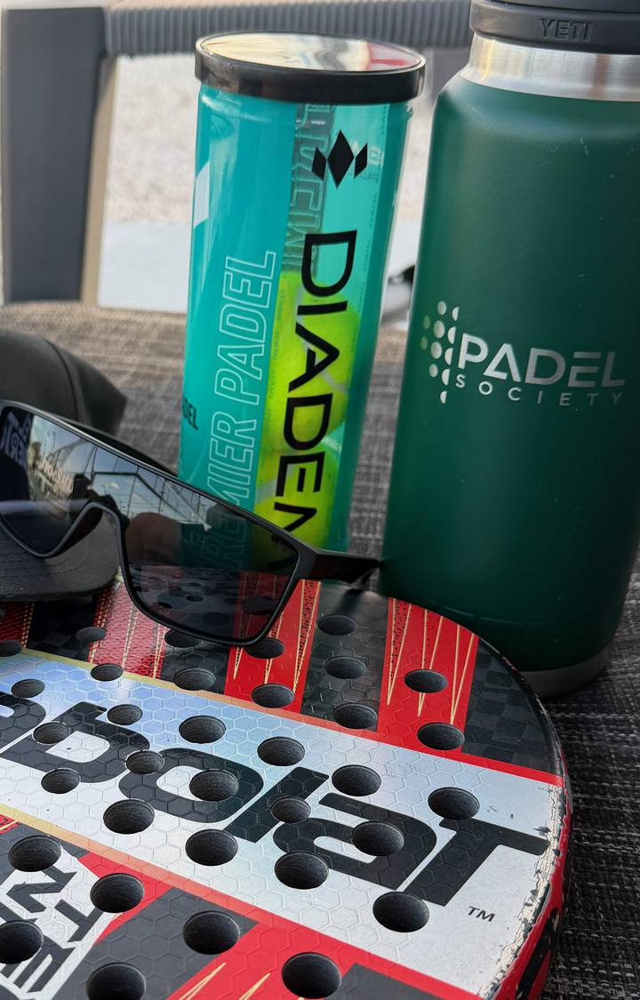
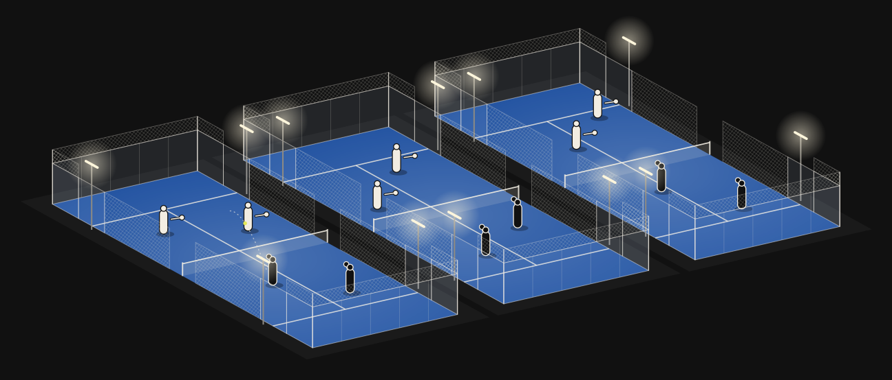

You get drafted.
Padel IRL is a team league for Austin players rated about 3.5 to 4.5 on Playtomic. Men and women both play. If your rating fits, you're in.
Six captains draft six teams of six on Thursday, January 7, at Padel Society. Five rounds follow at clubs around Austin, then an all-day Saturday final in June.
$55 a player, plus $15 or $30 a session for court time.
Email Brooks to get on the listIt opens an email with five quick questions. No mail app? Write to brookswiley@gmail.com.

The season
Draft night, five rounds, then finals. With six teams, every team meets every other team once. The rounds move around Austin's clubs, weather permitting, and start times are still to come.
- Draft
- Round 1
- Round 2
- Round 3
- Round 4
- Round 5
- FinalsSatJun
Draft night is at Padel Society. Every registered player is invited, and you find out your team that night.
Finals are an all-day Saturday bracket in June, date to come. Seeds 3 to 6 play first, and the top two seeds get a bye.
How the draft works
Nobody picks their own team. Your Playtomic level goes on the board, the commissioner and two captains check it, and six captains draft in a snake. The order runs 1 to 6, then back from 6 to 1, for six rounds.
The league is aimed at 3.5 to 4.5 on Playtomic. There will also be a ceiling on World Padel Rating (WPR), and the number isn't set yet.
The league needs six captains. If you'd run a team, say so when you put your name down.
What a Thursday looks like

Each team has three lines, and both captains declare their three.
All three matches are played at the same time, or as close to it as the host club's courts allow.
Men and women both play. With six on a team, you play every night you're available.
Matches are two sets to six with golden point, and a 10-point tiebreak at a set apiece. A team scores a point for every line it wins and one more for winning the fixture.
League fee: $55
That's the league fee for the season. It covers draft night, finals day and new balls for every line.
Court time you pay to the host club on the night: $15 or $30 a session, depending on the club. Five rounds come to $75 to $150.
Make every match you're in the lineup for and $10 comes off next season. The league is not-for-profit.
With six on a team, every absence needs a sub. If you can't commit to the season, email Brooks to join the sub list. Subs pay the host club's court fee on nights they play.
From the commissioner
I wanted a league where you don't pick your team, so a Thursday night turns into new partners and new rivals.
I co-founded Major League Pickleball and was DUPR's first CEO, so I've built a draft league and a rating system before. This one is smaller on purpose, 36 players in one city.
This season is Austin only.
Brooks WileyCommissioner
Clubs and partners
If your club could host a match night, or your company wants to sponsor the balls or the season, write to Brooks.
Email Brooks about hosting or sponsoring